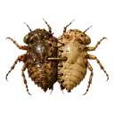
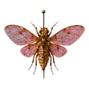
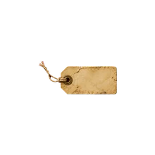

Каждый новый гибрид случайный: даже у одной и той же пары жуков все гибриды выходят разными. Что именно выбирается случайно:
Гибридов можно вывести до шести, они сохраняются в браузере. Выведенный гибрид уже не меняется: хочешь другой, нажми на скрещивание ещё раз.
Звуки: записи насекомых с Wikimedia Commons, обработаны (нарезка в петлю, фильтры, смещение высоты).
Шрифт Roboto, Apache License 2.0.